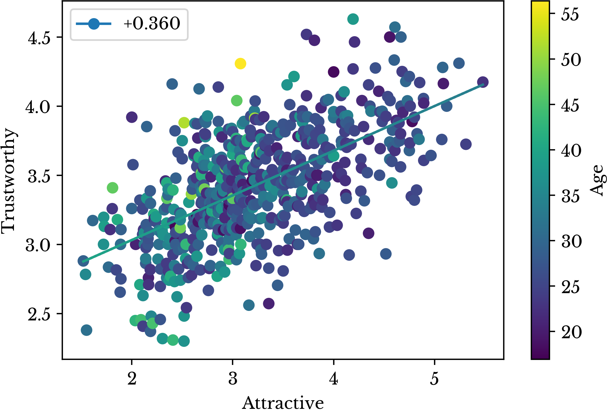
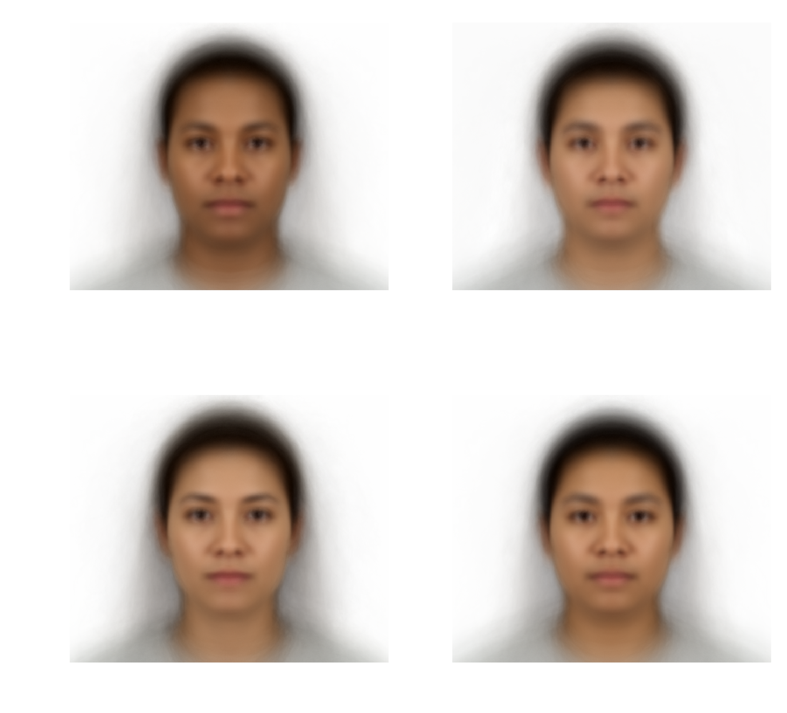

A Statistical Analysis of Facial Attractiveness
Tue, 02 Jan 2018
Data Science, Data Visualization, Facial Attractiveness, Machine Learning, Statistics
An intermediate activation volume produced by a convolutional neural network predicting the attractiveness of a person.Does beauty truly lie in the eye of its beholder? This chapter explores the complex array of factors that influence facial attractiveness to answer that question or at least to understand it better.
The Dataset
The Chicago Face Database is a dataset created at the University of Chicago by Debbie S. Ma, Joshua Correll, and Bernd Wittenbrink [1]. It consists of portrait photos of several hundred participants along with corresponding measurement and questionnaire data. Each of the participants had several of their facial features measured. For example, the measurements include:- The distance between the outer edge of the subject's nostrils at the widest point.
- The average distance between the inner and outer corner of the subject's eye.
- The distance between the subject's pupil center to hairline.

Figure 1: Chicago Face Dataset Subject AM 238
| Subject | Attractive | Feminine | Masculine | Face Width Cheek | Average Eye Height |
|---|---|---|---|---|---|
| AM-238 | 3.120 | 1.769 | 4.292 | 634 | 46.250 |
| AF-200 | 4.111 | 5.630 | 1.357 | 676 | 65.250 |
| LM-243 | 2.778 | 1.179 | 4.857 | 653 | 48.750 |
Table 1: Chicago Face Dataset Sample Data
In addition to the numerical data, a questionnaire was given to another set of participants along with the images. The participants were asked to rate several qualities of each subject on a scale from 1 to 7. These qualities include:- How attractive the subject is with respect to people of the same race and gender.
- How feminine the subject is with respect to people of the same race and gender.
- How masculine the subject is with respect to people of the same race and gender.
Existing Work
The literature often quotes facial symmetry, averageness, and secondary sexual characteristics as influencing attractiveness. In an often-cited paper, Little et. al describe plausible reasons why these particular features are considered attractive from an evolutionary perspective [2]. Further, they claim that despite there being cultural differences to facial attractiveness, favorable cross-cultural traits exist.Symmetry is stated to be attractive as it represents the ideal outcome of development. Asymmetry is asserted to arise from both genetic and environmental issues. The issues cited include genetic defects, mutations, nutrition, and infections. Humans are claimed to have evolved to find these features less attractive as they suggest less than ideal fitness.
Averageness is stated to be found attractive as an indicator of genetic diversity. Genetic diversity improves fitness in regards to immunity and reduced risk of genetic issues in offspring. Again, humans are claimed to have evolved to find averageness to be more attractive.
Secondary sexual characteristics represent the features that distinguish male faces from female faces. These traits develop in part due to hormonal differences between men and women. Again, these differences are declared to be found attractive in that they indicate genetic robustness. Little et al. state that there is a solid evidence for a positive relationship between femininity and attractiveness in women. The link between masculinity and attractiveness in men is claimed to be less pronounced.
Analysis of Facial Measurements
The effect of averageness is examined in the Chicago Face Dataset. The matrix of measurement data is normalized so that each column has mean 0 and variance 1. Next, the L2 norm of each sample is computed. The result is a single value representing the total irregularity of a subject with respect to all facial measurements. Next, linear regression is used to analyze the relationship between attractiveness and irregularity.The purpose of linear regression is to find a vector of coefficients \(\mathbf{x}\) together with a bias \(\mathbf{b}\) that minimize the prediction error of the model. The formulas for linear regression and prediction error are shown in Equations 1 and 2. In these equations, \(\mathbf{A}\) is the matrix of sample data, \(\mathbf{Y}\) is the matrix of targets, \(\mathbf{\hat{Y}}\) are the predictions, and \(\lVert \cdot \rVert\) denotes the L2 norm.
\[\displaylines{\mathbf{\hat{Y}}=\mathbf{A} \mathbf{x} + \mathbf{b}}\]
Equation 1: Linear Regression
\[\displaylines{E(\mathbf{x}, \mathbf{b})=\lVert \mathbf{A}\mathbf{x}+\mathbf{b} - \mathbf{Y}\rVert^{2}}\]
Equation 2: Linear Regression Error Term
A linear regression model is fit which regresses the attractiveness rating against irregularity. The result is shown in Figure 2.Figure 2: Irregularity Scatter Plot and Trend Line
target variable that is explained by the regular variable(s). Its formula is shown in Equation 3, with \(n\) being the number of data points, \(\mathbf{Y_{i}}\) the \(i\)-th target vector, and \(\mathbf{\bar{Y}}\) the vector of target column means.\[\displaylines{R^{2}=1-\frac{\sum\limits_{i=1}^{n}{\lVert \mathbf{Y}_{i} - \mathbf{\hat{Y}}_{i}} \rVert^{2}}{\sum\limits_{i=1}^{n}{\lVert \mathbf{Y}_{i} - \mathbf{\bar{Y}} \rVert^{2}}}}\]
Equation 3: The Coefficient of Determination
As can be seen, there is a minor negative relationship between irregularity and attractiveness. However, an \(R^{2}\) of 0.052 does not provide substantial evidence for a relationship between the two variables. This number implies that only 5% of variation in attractiveness can be explained by averageness. It is important to note that the relationship is inverted here as the \(x\)-axis represents distance from average or irregularity. A negative relationship shows that attractiveness increases as the feature measurements move closer to average.Two sorted lists are constructed from the sample data. In one list, the samples are sorted by their averageness. In the other list, the samples are sorted by their attractiveness. The average absolute difference between these two orderings is 175.7 with a standard deviation of 126.9. If the subjects stand in a line ordered by averageness, each subject would move past 175 people on average to re-order the line by attractiveness. In a dataset of roughly 600 people, this is anything but impressive. Figure 3 shows the distance each subject needs to move to reorder the line.
Figure 3: Averageness Ordering to Attractiveness Ordering
Next, the effect of symmetry is evaluated. The dataset contains several separate measurements for the left and right portions of the face. The absolute differences between the left and right measurements are computed. The result is 6 features measuring facial asymmetry. A multiple regression model is constructed which predicts attractiveness from these 6 derived features. Figure 4 shows a scatter plot of the target values against the predictions.Figure 4: Scatter Plot of Predictions for Symmetry Model
The plot is labeled with the adjusted \(R^{2}\) of the fit. The adjustment to \(R^{2}\) is made to account for the fact that models with more dependent variables spuriously obtain higher \(R^{2}\) values. The formula is shown in Equation 4, where \(p\) is the number of parameters in the model. In this case, the model has 6 parameters. \(\bar{R}^{2}\) is a more robust estimate of model performance when multiple explanatory variables are involved.\[\displaylines{\bar{R}^{2}=1-(1-R^{2})\frac{n-1}{n-p-1}}\]
Equation 4: The Adjusted Coefficient of Determination
The scatter plot does not show a clear relationship between the predictions and attractiveness. This is reflected in the negative \(\bar{R}^2\). An \(\bar{R}^{2}\) of -0.006 implies that the model has no explanatory power in predicting attractiveness.This model is compared to a baseline model that always predicts the mean standardized attractiveness: 0. The general linear F-statistic is used to perform the comparison. The F-statistic and associated p-value quantify the amount of additional variance in attractiveness that is explained by a model that is not explained by a baseline model. The formula for the F-statistic is shown in Equation 5 with \(n\) the number of samples and \(p\) the degrees of freedom for the model. The computed F-statistic is 0.42 with an associated p-value of 0.87. There is no evidence that the model provides a better fit than one that merely predicts the mean standardized attractiveness.
\[\displaylines{F = \frac{n - p}{p} \times \frac{\sum\limits_{i=1}^{n}{\lVert \mathbf{\hat{Y}}_{i} - \mathbf{\bar{Y}} \rVert^{2}}}{\sum\limits_{i=1}^{n}{\lVert \mathbf{\hat{Y}}_{i} - \mathbf{Y}_{i}} \rVert^{2}}}\]
Equation 5: The F-Statistic for Multiple Regression
The lack of a significant relationship here does not prove that symmetry is useless in predicting attractiveness. There are many other possible explanations for this lack including poor features, poor data, or even random variation. Regardless, the lack of strong relationships in the above models demonstrates the notion that there are many aspects to facial attractiveness. Relying too heavily on any one aspect can affect model performance. The reality is that real world data is often noisy and full of complex and unintuitive relationships.| Insight: The effects of symmetry and averageness appear overstated. |
A multiple regression model is constructed which predicts the attractiveness of a sample given the 40 facial measurement features. This model is subsequently analyzed to gain insight about facial features which affect attractiveness. In order to fairly compare the effects of each variable, each measurement is first standardized. If this is not performed, then measurements with larger values may appear to be weighted less heavily. For example, the measurements for facial width at the cheek are much larger than those for eye height. Thus, each column is centered by subtracting its mean and then scaled by its standard deviation. The result is that each entry is now a t-score for that column.
A baseline model is first constructed for the sake of comparison. The baseline model always predicts the mean standardized attractiveness: 0. The baseline model achieves a root mean squared error (RMSE) of 0.77. The formula the RMSE is shown in Equation 6.
\[\displaylines{L(\mathbf{Y}, \mathbf{\hat{Y}})=\frac{\lVert \mathbf{Y} - \mathbf{\hat{Y}} \rVert}{\sqrt{n}}}\]
Equation 6: The Root Mean Squared Error
Cross-validation is used to further access the performance of the model. Figure 5 shows a depiction of a train/test cross-validation split on a hypothetical dataset of 100 samples.Figure 5: Cross-Validation Split
In Figure 5, each cell represents an entry in the dataset. By dividing the dataset into training and testing sets, the performance of the model can be evaluated on samples with which it has not been trained. This validation is needed to ensure the model is not simply memorizing the target values and has the ability generalize. When performing both standardization and cross-validation, care must be taken to prevent data leakage. Data leakage is providing your model with information about the cross-validation data. To avoid this, the column means and standard deviations must only be computed on the training data.The dataset is repeatedly divided into training and testing sets and then standardized. The model is fit using the training set and then scored using the testing set. Scoring is accomplished by taking the predicted value of the model and comparing it to the real value from the dataset. Performing training and testing 512 times, the average cross-validation loss is 0.691 with a standard deviation of 0.054. An additional model is fit to the entire data set. The target values are plotted against the predictions of this model and the result is shown in Figure 6. The \(\bar{R}^{2}\) of the fit is 0.247.
Figure 6: Scatter Plot of Predictions for Facial Measurement Model
The coefficient vectors of each of the 512 linear regression models are recorded and analyzed. The average and standard deviation for each coefficient value is computed and the results of the top 6 most influential positive and negative features are listed in Table 2.| Positive Feature Weights | Negative Feature Weights | ||||
|---|---|---|---|---|---|
| Name | Avg. | Std. | Name | Avg. | Std. |
| L Eye H | +8.09% | +2.93 | Avg Eye Height | -14.48% | +5.67% |
| R Eye H | +7.69% | +2.88 | Lip Fullness | -4.89% | +2.15% |
| Lip Thickness | +4.42% | +2.13 | Chin Length | -4.27% | +2.02% |
| Cheekbone Height | +3.82% | +1.55 | Forehead | -4.18% | +2.30% |
| Midface Length | +3.76% | +1.88 | Pupil Lip L | -3.47% | +1.29% |
| Upper Head Length | +2.98% | +1.60 | Faceshape | -2.79% | +1.75% |
Table 2: Most Influential Linear Regression Coefficients
Features with negative coefficients decrease attractiveness as they increase in value; those with positive coefficients do the opposite. The complicated relationship amongst the variables is illustrated in the table. Individual eye height measurements positively affect attractiveness while average eye height negatively affects it. It appears that the effects of these two coefficients cancel out at least somewhat. A similar paradox is apparent with lip fullness and lip thickness. Due to this, it is difficult to determine the true importance of the various features.This situation arises from multicollinearity in the input data. Multicollinearity exists when there are strong linear relationships between the explanatory variables. When this occurs, the related variables do not change in isolation. Change in one variable typically results in a proportional change in the related variables. These proportional changes can have additive or subtractive effects to the change induced by the original variable. It is this behavior that makes interpretation difficult.
With facial measurements, the cause of this behavior is intuitive. If the height of the left eye increases, then the measurements for the average height also increases. Lip fullness and thickness are similarly defined. A table of the top negative and positive correlation among facial measurements is shown in Table 3.
| Positive Correlations | Negative Correlations | ||||
|---|---|---|---|---|---|
| R | Feature i | Feature j | R | Feature i | Feature j |
| +0.985 | Midcheek Chin R | Cheeks avg | -0.825 | Face Width Mouth | Heart Shapeness |
| +0.984 | Midcheek Chin L | Cheeks avg | -0.811 | Cheekbone Prominence | Face Roundness |
| +0.977 | L Eye H | Avg Eye Height | -0.783 | Face Length | Faceshape |
| +0.976 | R Eye H | Avg Eye Height | -0.761 | Face Width Mouth | Cheekbone Prominence |
| +0.975 | R Eye W | Avg Eye Width | -0.752 | Heart Shapeness | Face Roundness |
| +0.973 | L Eye W | Avg Eye Width | -0.731 | Nose Length | Noseshape |
| +0.969 | Pupil Lip R | Pupil Lip L | -0.697 | Pupil Lip L | f WHR |
| +0.954 | Lip Thickness | Lip Fullness | -0.695 | Pupil Lip R | fWHR |
Table 3: Most Correlated Measurement Features
A lasso regression model is used to address the multicollinearity. The term lasso is an abbreviation for "least absolute shrinkage and selection operator." Lasso regression penalizes the absolute value of the regression coefficients to help prevent situations where one coefficient cancels the effect of another. The error term for lasso regression is shown in Equation 7. The error term is the same as that for linear regression with the addition of an L1 regularization term.\[\displaylines{E(\mathbf{x},\mathbf{b})=\lVert \mathbf{A}\mathbf{x}+\mathbf{b} - \mathbf{Y}\rVert^{2}+\lVert \mathbf{\Gamma} \mathbf{x} \rVert_{1}}\]
Equation 7: Lasso Regression Error Term
As \(\mathbf{\Gamma}\) increases, the coefficients of the model are forced to 0. An appropriate value of \(\mathbf{\Gamma}\) can remove collinear variables from the model while maximizing model performance. A large number of models are created as \(\mathbf{\Gamma}\) is varied from 0 to 1. Several of the coefficient values are plotted against \(\mathbf{\Gamma}\) and the result is shown in Figure 6.Figure 6: Lasso Coefficient Shrinkage
The number of non-zero coefficients in the model is shown in Figure 7 for various values of \(\mathbf{\Gamma}\). The color represents the \(R^{2}\) of the fit. As the number of non-zero coefficients decreases, the prediction power of the model steadily worsens.Figure 7: Number of Nonzero Lasso Regression Coefficients
\(\mathbf{\Gamma}\) is chosen to be 0.02. Performing training and testing 512 times, the average cross-validation loss is 0.689 with a standard deviation of 0.054. Lower \(\mathbf{\Gamma}\) values exist that further improve performance, but the introduction of more collinear terms makes interpretation more difficult. By further tuning \(\mathbf{\Gamma}\), an average cross-validation loss of 0.680 with a standard deviation of 0.053 is achieved.One additional model is fit to the entire dataset. The target values are plotted against the predicted values and the result is shown in Figure 8. The \(\bar{R}^{2}\) of the fit is 0.246.
Figure 8: Predictions of the Facial Measurement Model
The cross-validation loss suggests the model is able to predict the attractiveness score of a subject to roughly ± 0.68 of its true value (from 1-7). If a subject had an attractiveness score of 6.2, for instance, the model might predict a value between 5.52 and 6.88. An individual prediction might well fall outside of this range, but the number is descriptive of the overall performance of the model. The ability of a relatively simple linear model to predict attractiveness based on facial measurements is suggestive that objective measures of facial attractiveness may exist.Again, the coefficient vectors of each of the 512 lasso regression models are recorded and analyzed. The average and standard deviation for each coefficient value is computed. In addition, the intervals between the minimum and maximum value for each coefficient are computed. The coefficients whose intervals do not contain 0 are listed for \(\mathbf{\Gamma} = 0.0012\) in Table 4.
| Feature | Avg. | Std. | Min | Max |
|---|---|---|---|---|
| Pupil Lip L | -0.092 | +0.017 | -0.137 | -0.035 |
| Noseshape | -0.072 | +0.012 | -0.116 | -0.036 |
| Chin Length | -0.055 | +0.009 | -0.081 | -0.002 |
| Lip Fullness | -0.047 | +0.025 | -0.141 | -0.012 |
| Midbrow Hairline L | -0.037 | +0.014 | -0.089 | -0.003 |
| Asymmetry Pupil Lip | -0.015 | +0.002 | -0.021 | -0.010 |
| Luminance Median | +0.021 | +0.003 | +0.012 | +0.031 |
| Cheekbone Prominence | +0.021 | +0.005 | +0.006 | +0.040 |
| Pupil Top L | +0.028 | +0.007 | +0.007 | +0.046 |
| Nose Width | +0.054 | +0.009 | +0.027 | +0.086 |
| Midface Length | +0.077 | +0.027 | +0.001 | +0.142 |
Table 4: Non-Zero Lasso Regression Coefficients for Γ = 0.0012
Even using lasso regression, the effects of multicollinearity can still be seen. The correlation between pupil to lip length and midface length is 0.638. However, both features appear in the model with opposite signs. Gamma can be further increased to remove these counteracting effects, though model performance begins to suffer.| Feature | Avg. | Std. | Min | Max |
|---|---|---|---|---|
| Asymmetry Pupil Lip | -0.062 | +0.006 | -0.082 | -0.044 |
| Pupil Lip L | -0.050 | +0.014 | -0.080 | -0.001 |
| Face Width Cheeks | -0.033 | +0.008 | -0.053 | -0.010 |
| Luminance Median | +0.082 | +0.008 | +0.055 | +0.106 |
| Cheekbone Height | +0.104 | +0.022 | +0.035 | +0.142 |
| Nose Length | +0.151 | +0.011 | +0.119 | +0.193 |
Table 5: Non-Zero Lasso Regression Coefficients for Γ = 0.02
As seen in Table 5, the larger value of \(\mathbf{\Gamma}\) force more coefficients towards 0, resulting in a simpler model. The model appears to rate subjects with wider faces and longer pupil to lip length as being less attractive. Interestingly, the asymmetry measurement for the pupil to lip length has a significant negative effect. This provides some support for the influence of symmetry, though its effect is overshadowed by other variables. In the positive direction, the model appears to favor high cheekbones, longer noses, and more luminous faces. The distributions of these coefficients for each of the 512 lasso regression models are shown in Figures 9 and 10 along with the intervals containing their values.Figure 9: Significant Positive Measurement Features
Figure 10: Significant Negative Measurement Features
In this case, there is a tradeoff between a higher performance model and one that is easy to interpret. Though few of the individual coefficients are significant, the model is able to acheive modest performance by combining a larger number of features. If only coefficients that are significant at the 95% confidence level are used, the \(\bar{R}^{2}\) of the fit decreases to 0.110. An intuitive explanation for this may be that facial attractiveness is a result of the combination of a wide variety of facial features.| Insight: Objective measures of attractiveness appear to exist. |
Regardless of the features that are most important, the lasso regression model is able to make a substantial improvement over the baseline model. This is reflected in the F-statistic for the model. For \(\Gamma = 0.0012\), the F-statistic is 6.48 with a corresponding \(p < 1e-22\). This suggests that facial measurements provide useful information in predicting attractiveness.
Analysis of Subjective Feature
Next, the subjective features of the dataset are analyzed. These features are scores from 1 to 7 on a variety of perceived qualities such as attractiveness, masculinity, and femininity. Scores represent averages over a number of participants evaluating the images of the dataset. For instance, subject AF-200 has a masculinity score of 1.357 which is her average score given by 28 evaluators for that quality.A lasso regression model is constructed which predicts attractiveness based on all other subjective features. Attractiveness is excluded for obvious reasons. Care must again be taken to account for multicollinearity. The top positive and negative correlations among the subjective features are shown in Table 6.
| Positive Correlations | Negative Correlations | ||||
|---|---|---|---|---|---|
| R | Feature i | Feature j | R | Feature i | Feature j |
| +0.843 | Angry | Disgusted | -0.952 | Feminine | Masculine |
| +0.834 | Angry | Threatening | -0.683 | Age | Babyface |
| +0.734 | Dominant | Threatening | -0.631 | Threatening | Trustworthy |
| +0.725 | Afraid | Sad | -0.606 | Angry | Happy |
| +0.687 | Disgusted | Threatening | -0.587 | Angry | Trustworthy |
| +0.683 | Happy | Trustworthy | -0.573 | Happy | Sad |
Table 6: Most Correlated Subjective Features
Thankfully and intuitively the correlations among the variables are weaker than those among the measurement variables.Using the subjective features alone, the lasso regression model achieves an average cross-validation accuracy 0.459 with a standard deviations of 0.040. An additional model is fit to the entire dataset. The target values are plotted against the model predictions and the plot is labeled with the \(\bar{R}\) of the fit: 0.653. The result is shown in Figure 11.
Figure 11: Predictions of the Subjective Feature Model
Interestingly, this is a substantial improvement over the accuracy of the regression model based on the facial measurements. This implies subjective features are more useful overall in predicting attractiveness.| Insight: Subjective features are better predictors of attractiveness than facial measurements. |
Next, the coefficient vector \(\mathbf{x}\) of the regression model is analyzed in the same fashion as earlier. 512 lasso regression models are fit using separate cross-validation splits and the average and standard deviation of each feature coefficient is computed. The weights of the top positive and negative subjective features are shown in Table 7 along with their sign.
| Positive Feature Weights | Negative Feature Weights | ||||
|---|---|---|---|---|---|
| Name | Avg. | Std. | Name | Avg. | Std. |
| Feminine | +34.34% | +0.64% | Age | -7.37% | +0.31% |
| Masculine | +26.34% | +0.65% | Sad | -5.54% | +0.33% |
| Trustworthy | +5.99% | +0.48% | Threatening | -3.84% | +0.50% |
| Dominant | +3.87% | +0.47% | Unusual | -3.06% | +0.24% |
| Afraid | +3.04% | +0.36% | Babyface | -2.41% | +0.30% |
| Angry | +0.35% | +0.47% | Surprised | -1.66% | +0.24% |
Table 7: Most Influential Subjective Features
The model scores people who appear old, sad, and threatening as being less attractive. It is important to note that the age variable represents the average age estimate made by the participant evaluators and not the true age of the subject. This implies that people perceived as youthful are also perceived as attractive. Somewhat paradoxically, subjects are rated as being less attractive for having a "babyface." Nevertheless, there is a subtle distinction between the appearance of youth and having a babyface.The model scores people who appear more feminine, masculine, and trustworthy as appearing more attractive. The relationship between femininity, masculinity, and attractiveness are more easily visualized using scatter plots. Figure 12 shows femininity plotted against attractiveness with separate trend lines for men and women.
Figure 12: Relationship Between Attractive and Feminine
There is a large difference between the femininity scores of men and women. There is also a large difference between the relationship of femininity and attractiveness between men and women. Attractiveness in women is very highly correlated with femininity. This intuitively makes sense, though deeper interpretation is somewhat ambiguous. Depending on the evaluator, femininity might be perceived as being attractive or attractiveness might be perceived as a quality of femininity. The subjective nature of these features make interpretation more difficult. In regards to men, femininity has little effect on attractiveness.Figure 13: Relationship Between Attractive and Masculine
Figure 13 shows masculinity plotted against attractiveness with separate trend lines for men and women. Interestingly, masculinity has a stronger negative effect on attractiveness in women than it has a positive effect on men. From the coefficients seen earlier, the regression model appears to miss this effect. The above plots are combined into a 3D scatter plot which shows the interactions between the 3 variables and age.Figure 14: Relationship Between Attractive, Masculine, and Feminine
Another important aspect of these figures is that there are fewer men who are rated as being attractive. This is despite the fact that the number male and female subjects is nearly equal with 290 male and 307 female samples. The majority of the data points for men are clustered in the first half of the range of attractiveness. This effect confounds the relationships presented in Table 7.Figure 15: Distribution of Attractiveness Scores for Men and Women
The distribution of attractiveness scores for men and women are shown in Figure 15 along with their corresponding sampling distributions. Due to the large number of participants, there is almost no overlap between the sampling distributions. Performing a Welch's t-test to compare the two means, \(p < 1e-12\). It appears that despite being asked to control for gender, the evaluators still rated men as being less attractive on average.| Insight: Men are rated as being less attractive than women on average. |
Statistically significant differences between men and women exist in several of the other subjective features. Men are more likely to be perceived as being masculine, threatening or dominant. Women are more likely to be perceived as being feminine, trustworthy, unusual, or sad. The distributions for several other of these features are shown in Figure 16.
Figure 16: Distribution Differences for Men and Women
The effects of several of the other subjective features are irrespective of gender. The appearance of trustworthiness, for example, is correlated with attractiveness in both genders. Figure 17 presents a scatter plot of attractiveness and trustworthiness with a single trend line for men and women.
Figure 17: Relationship Between Attractive and Trustworthy
It appears there is a modest positive relationship between appearing trustworthy and appearing attractive. This effect ties together the two observations that men are more likely to be rated both less attractive and less trustworthy than women.Combining Facial Measurements and Subjective Features
A lasso regression model is constructed using both the facial measurements and the subjective features. \(\mathbf{\Gamma}\) is chosen to be 0.0075. The model achieves an average cross-validation loss of 0.427 with a standard deviation of 0.035. The \(\bar{R}^{2}\) of the fit is 0.672. If both dummy variables for race and gender and the subjective race and gender estimates are introduced, model accuracy is again improved.To further improve performance, seperate models for men and women are constructed and the results of each are synthesized together. Finally cubic polynomial interaction terms for the measurement data are introduced. Cubic terms are used due to the cubic relationship between measurement length and 3D facial structure. The target values are plotted against the predictions of the final model and the result is shown in Figure 18.
Figure 18: Final Model Prediction Scatter Plot
Again, cross-validation splits are repeatedly formed and the performance of each model is evaluated. This process is repeated 512 times. In addition, one model is fit to the entire dataset to evaluate the overall goodness of fit. The results for each of the feature sets is shown in Table 8. The minimum cross-validation loss is 0.373 with a standard deviation of 0.036. The corresponding \(\bar{R}^2\) is 0.823.| Feature Set | Avg. Loss | Std. Loss | Adj. R² |
|---|---|---|---|
| Baseline | 0.770 | 0.060 | 0.000 |
| Measurements | 0.680 | 0.053 | 0.246 |
| Subjective | 0.459 | 0.040 | 0.626 |
| Measurement + Subjective | 0.427 | 0.035 | 0.672 |
| All | 0.397 | 0.040 | 0.718 |
| All Seperate Gender | 0.380 | 0.036 | 0.802 |
| All Seperate Gender + Cubic | 0.373 | 0.035 | 0.823 |
Table 8: Lasso Regression Cross-Validation Performance
As can be seen, the addition of each feature set provides more power in predicting attractiveness. This shows that the feature sets compliment each other, at least partially. For example, by using the facial measurements in addition to the subjective features, the model is able to achieve a substantial improvement in performance. This may suggest that while the majority of attractiveness is subjective, there are anatomical characteristics which are perceived as being attractive. For although the majority of variation in attractiveness is explained by the subjective features, facial measurements present additional useful information.This explanation intuitively makes sense, though some caution should be exercised. There are correlations amongst the subjective features and facial measurements. For example, the correlation between the subjective feature "Surprised" and eye size is 0.348. This is less of a profound insight and more a description of a biological function. Nevertheless, the effect of eye size on attractiveness may be overshadowed by the effect of "Surprised," though the measurement seems to be closer to the root cause.
Differences Between Genders
The differences between attractiveness in men and women are explored further. The subjects are divided into two groups and 512 pairs of regression models are created with one model fit to men and one to women. The mean and standard deviation of each coefficient is computed separately for each group. The mean coefficient weights for men and women are shown in Figure 19 in two pie charts. Features with a positive effect are shown in blue while those with a negative effect are shown in red.
Figure 19: Coefficient Effect Weights for Men and Women
The influence of femininity dominates with women. This result agrees with the earlier seen scatter plot comparing femininity and attractiveness. The most influential effect for men is the appearance of trustworthiness. Masculinity is also of importance, but the effect is weaker than that of femininity on women. Also of note is that the most important features are all subjective. This reinforces the notion that the subjective features are better predictors of attractiveness than the facial measurements. In order to explore the differences among the measurement features, separate models are fit only to the measurement data. The results are shown in Figure 20.Figure 20: Measurement Feature Differences Between Men and Women
From the plot, nose width is more important in determining attractiveness in men than in women. The converse is true with facial luminance. It is important to note that the bar plot only shows the magnitude of the effect and not the sign. The top 10 most influential features are listed for men and women in Table 9 along with their sign.| Weights for Men | Weights for Women | ||||
|---|---|---|---|---|---|
| Name | Avg. | Std. | Name | Avg. | Std. |
| Cheekbone Height | +16.12% | +3.82% | Nose Length | +17.34% | +2.58% |
| Nose Width | +14.86% | +3.16% | Bottom Lip Chin | -12.97% | +5.46% |
| Nose Length | +11.69% | +2.93% | Luminance Median | +11.54% | +1.86% |
| Bottom Lip Chin | -9.88% | +5.93% | Cheekbone Height | +7.99% | +3.38% |
| Midcheek Chin L | +7.70% | +4.08% | Pupil Top R | +7.63% | +3.43% |
| Forehead Height | +5.20% | +2.33% | Face Width Cheeks | -6.85% | +1.72% |
| Lip Fullness | -5.01% | +2.70% | L Eye W | +6.21% | +2.33% |
| Asymmetry Pupil Lip | -4.99% | +1.59% | Asymmetry Pupil Lip | -5.93% | +1.33% |
| Chin Length | -4.32% | +5.36% | Chin Length | -4.38% | +5.36% |
| Asymmetry Pupil Top | -3.79% | +1.66% | L Eye H | +3.00% | +2.55% |
Table 9: Signed Feature Weights for Men and Women
The table clarifies the directions of the relationships for several of the values. A number of the features have similar effects between men and women. Several exceptions to this are nose width, facial width at the cheeks, forehead height, and lip fullness . Facial luminance has an important positive affect on attractiveness in women that is not present in men.Analysis of Images
Next, the image data from the data set is analyzed. A regression model is constructed which predicts an image given a vector of values. Each sample vector contains the subjective scores along with the race and gender variables. Each target vector is a flattened vector of the pixels in the image.A ridge regression model is constructed. Ridge regression fits a linear function to the data using least-squares criterion along with an L2 regularization term. By regularizing the coefficients of the model, ridge regression can help to achieve better model performance when there are large numbers of correlated variables [3]. The error term for ridge regression is given in Equation 8. Ridge regression is used instead of lasso regression for performance reasons due to the high dimensionality of the data.
\[\displaylines{E(\mathbf{x},\mathbf{b})=\lVert \mathbf{A}\mathbf{x}+\mathbf{b} - \mathbf{Y}\rVert^{2}+\lVert \mathbf{\Gamma} \mathbf{x} \rVert^{2}}\]
Equation 8: Ridge Regression Error Term
The function is the same as that for linear regression with the addition of an L2 regularization term. By trying a large number of values, the regularization constant \(\mathbf{\Gamma}\) is chosen to be 1.0.The regression models fits an \((n, m)\) matrix of values, where \(n\) is the number of features in the sample vector and \(m\) is the number of pixels in the image. Each row of the matrix represents facial features which are related to the corresponding column in the input vectors. For example, if the first column of the input vector contains the age, then the first row in the matrix contains regression coefficients related to age. In this way, the regression model synthesizes a weighted average of different facial features to arrive at a final image.
The model's predictions for two of the input samples are shown in Figure 21. The original image is shown on the left and the predicted image is shown on the right. The shadowing around the face is an artifact of the wide variety of hairstyles among the subjects.
Figure 21: Image Predictions
The rows of the coefficient matrix can be analyzed to determine the portions of the face that are strongly related to a given feature. Each row of coefficients is reshaped into an image and results for several of the features are shown in Figure 22.Figure 22: Feature Activations
In the image, the regions of the face that contribute most to a feature are shown in lighter yellow. It appears that the shapes and positions of the eyes, nose, mouth, chin, and forehead are most important in determining attractiveness. Elongated curved eyebrows and lips appear to be more attractive. The definition and size of the base of the nose is influential as well. Also of interest, is definition in the chin and jowl region. There are also regions of activation on the forehead, implying that forehead shape is important. However, interpretation of this result is made difficult by the wide variety of hair styles in the dataset.The regression model is also capable of providing several interesting functions. Since the model predicts the appearance of a person based on a vector of coefficients, semi-random faces can be created by generating random vectors of coefficients. Random standardized sample vectors are generated using a standard normal distribution. The dummy variables for race and gender must be handled carefully to ensure they are mutually exclusive. Several such randomly generated images are shown in Figure 23.

Figure 23: Randomly Generated Faces with Low Variance
By increasing the standard deviation of the distribution used to generate samples, more irregular images can be generated. Randomly generated images with a standard deviation of 3 are shown in Figure 24.Figure 24: Randomly Generated Faces with High Variance
The model can also be used to manipulate images via transformations to the input vectors. A subject may be aged by increasing the age score in the corresponding vector. Or a subject may be made to look happier by modifying the appropriate value. Even the gender or race of a subject can be changed. Several examples follow.Subject WF-022 is a white female evaluated to be roughly 20 years old. By modifying the age in the sample vector, the subject is aged by roughly 55 years. The result is shown in Figure 25.
Figure 25: Age Modification
Subject AF-242 is an Asian female with a happiness score of 1.93 on a scale of 1 to 7. The subject is made to look happier by setting her happiness and sadness scores to the maximum and minimum values attained in the dataset respectively. The subject is also made to look sadder by setting her happiness and sadness scores to the minimum and maximum values respectively. The results are shown in Figures 26 and 27.Figure 26: Happiness Modification
Figure 27: Sadness Modification
Subject WF-022 is a white female. By modifying the race variables, the subject is transformed into a Latino female. The result is shown in Figure 28.Figure 28: Race Modification
Subject LM-224 is a Latino male. By modifying the gender variables, the subject is transformed into a Latino female. The result is shown in Figure 29.Figure 29: Gender Modification
Subject WM-220 is a white male with the lowest trustworthiness score observed in the study. Again, by manipulating the relevant variables, the subject is made to look more trustworthy and happy. The result is shown in Figure 30.Figure 30: Trustworthiness Modification
The above functionality has several applications including simulated aging as seen on missing people reports. In addition, it can be used to visually evaluate the performance of the model. Image transformations that are less convincing indicate that the model has a more difficulty determining what is influential for the given feature. For example, if modification of the masculinity feature does not produce a convincing image transformation, it may indicate that the model has difficulty determining the features that makes a person look masculine.Conclusion
Despite their simplicity, linear frequently perform well in practice and their results are relatively easy to interpret. More complicated models like kernel support vector machines and artificial neural networks can achieve better performance but perform black box prediction. The term black box implies that the model is used like an appliance. Samples are provided to one end of the black box and predictions come out the other end. The inner-workings of the model are opaque.Linear models obviously break down after some point. For instance, a subject with an impossibly wide nose might be rated as being arbitrarily attractive by an earlier seen model. Human intuition disagrees. Using a model to predict values outside the range of its training data is known as extrapolation. It is necessary to understand the shortcomings of a model to properly interpret its results.
The linear models in this chapter provide several key insights.
- The effects of symmetry and averageness appear overstated.
- Objective measures of attractiveness appear to exist.
- Subjective features are better predictors of attractiveness than facial measurements.
- Men are rated as being less attractive than women on average.
References
| [1] | Ma, D. S., Correll, J., & Wittenbrink, B. (2015). The Chicago face database: A free stimulus set of faces and norming data. Behavior research methods, 47(4), 1122-1135. |
| [2] | Little AC, Jones BC, DeBruine LM. Facial attractiveness: evolutionary based research. Philosophical Transactions of the Royal Society B: Biological Sciences. 2011;366(1571):1638-1659. doi:10.1098/rstb.2010.0404. |
| [3] | Friedman, J., Hastie, T., & Tibshirani, R. (2001). The elements of statistical learning (Vol. 1, pp. 241-249). New York: Springer series in statistics. |